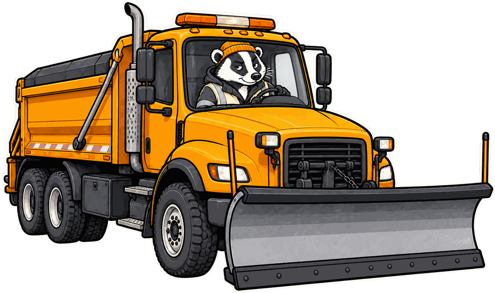

Your mile marker, live
Your nearest marker in real time, all 50 states — it works with no cell service. Plus GPS speed and a live map.
Your nearest mile marker, live — plus road alerts from all 50 state DOTs. It’s how help finds you.
Your mile marker is always free. Premium — map, live alerts, trip tools — $9.99/yr or $1.99/mo, 7-day free trial.

Your nearest marker in real time, all 50 states — it works with no cell service. Plus GPS speed and a live map.
Closures, crashes, chains, and construction from all 50 state feeds — with border waits, Seattle bridge status, and crosswind warnings.
CarPlay and Android Auto show your highway, mile marker, and road conditions — glance-and-go, free for everyone.